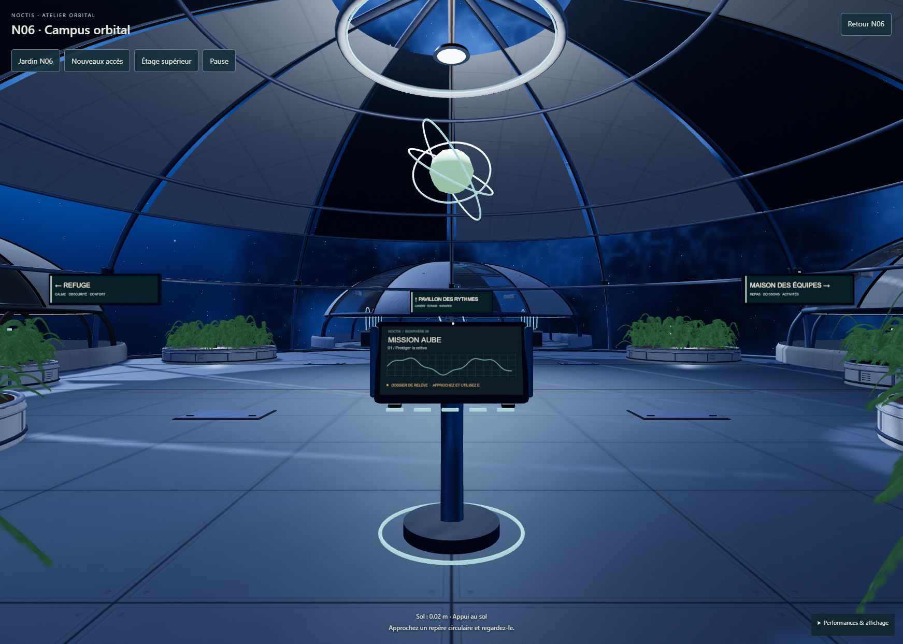

VOTRE UNIVERS · UN SEUL POINT D’ACCÈS
Toutes vos
créations.
Retrouvez chaque lieu, explorez ses variantes et passez d’un environnement à l’autre. Les originaux gardent leur place.
Explorer le campus N633 environnements & outils3 versions de N6

À LA UNE · CAMPUS FINAL ÉTENDUUn jardin. Plusieurs horizons. ↗EXPLORER LA COLLECTION
Choisissez votre destination
Aucune création ne correspond à cette recherche.
APPRENDRE · MODULE PÉDAGOGIQUE
CORTEX Évaluations
Retrouvez le portail des contrôles numériques, sa démonstration mobile et les informations de raccordement au serveur d’évaluation. Aucune copie d’élève n’est stockée sur GitHub Pages.
Ouvrir les évaluations →